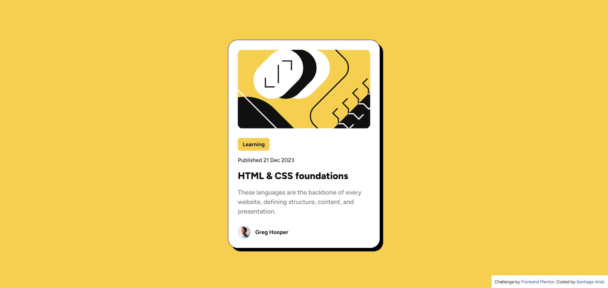
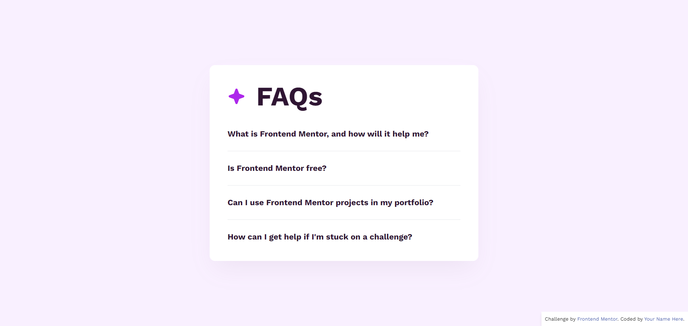
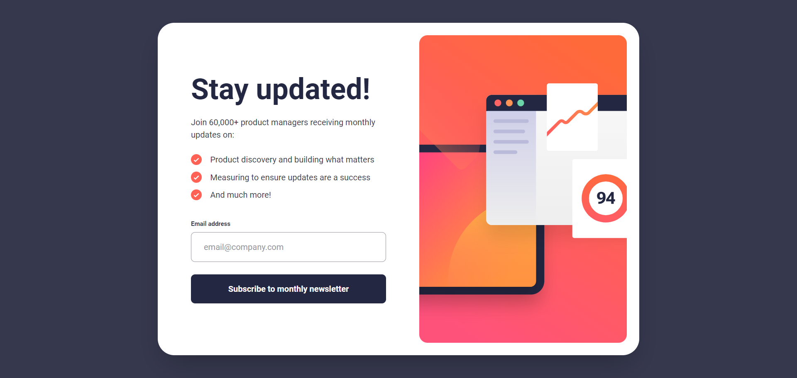
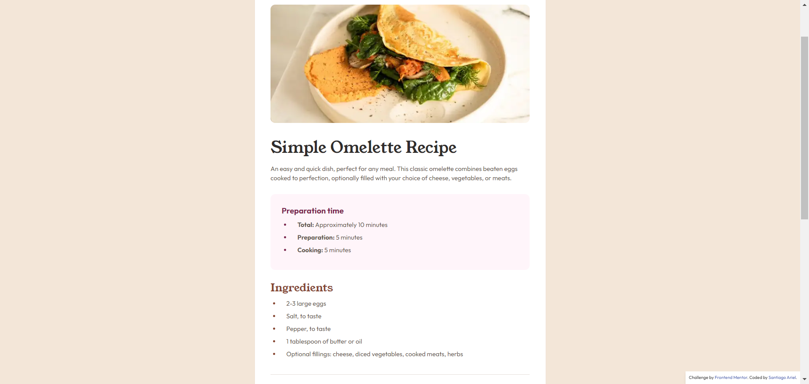
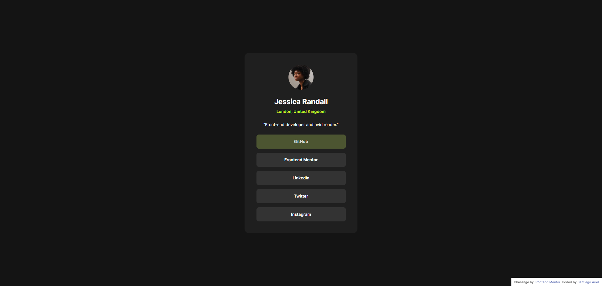

<!DOCTYPE html>
<html lang="es" class="dark">

</html>

<head>
  <meta charset="UTF-8">
  <meta name="viewport" content="width=device-width, initial-scale=1.0">
  <title>SV - Frontend Mentor Soluciones</title>
  <link rel="stylesheet" href="./style.css">
  <meta name="description" content="SV - Frontend Mentor Soluciones. Proyectos de HTML y CSS para mejorar tus habilidades de desarrollo frontend.">
  <meta name="keywords" content="HTML, CSS, Frontend, Mentor, Soluciones, Proyectos">
  <meta name="author" content="Santiago Ariel Villanueva">
</head>

<body class="flex flex-col min-h-screen dark:bg-gray-900 dark:text-white">
  <header>
    <nav class="bg-gray-800" aria-label="Main Navigation">
      <div class="mx-auto max-w-7xl px-2 sm:px-6 lg:px-8">
        <div class="relative flex h-16 items-center justify-end">
          <div class="absolute inset-y-0 right-0 flex items-center pr-2 sm:static sm:inset-auto sm:ml-6 sm:pr-0">
            <a href="https://github.com/santiagoarielv98" target="_blank"
              class="relative rounded-full bg-gray-800 p-1 text-gray-400 hover:text-white focus:outline-none focus:ring-2 focus:ring-white focus:ring-offset-2 focus:ring-offset-gray-800"
              aria-label="GitHub Profile">
              <span class="sr-only">Ver perfil de GitHub</span>
              <svg xmlns="http://www.w3.org/2000/svg" width="24" height="24" fill="currentColor" viewBox="0 0 16 16">
                <path
                  d="M8 0C3.58 0 0 3.58 0 8c0 3.54 2.29 6.53 5.47 7.59.4.07.55-.17.55-.38 0-.19-.01-.82-.01-1.49-2.01.37-2.53-.49-2.69-.94-.09-.23-.48-.94-.82-1.13-.28-.15-.68-.52-.01-.53.63-.01 1.08.58 1.23.82.72 1.21 1.87.87 2.33.66.07-.52.28-.87.51-1.07-1.78-.2-3.64-.89-3.64-3.95 0-.87.31-1.59.82-2.15-.08-.2-.36-1.02.08-2.12 0 0 .67-.21 2.2.82.64-.18 1.32-.27 2-.27s1.36.09 2 .27c1.53-1.04 2.2-.82 2.2-.82.44 1.1.16 1.92.08 2.12.51.56.82 1.27.82 2.15 0 3.07-1.87 3.75-3.65 3.95.29.25.54.73.54 1.48 0 1.07-.01 1.93-.01 2.2 0 .21.15.46.55.38A8.01 8.01 0 0 0 16 8c0-4.42-3.58-8-8-8" />
              </svg>
            </a>
            <div class="relative ml-3">
              <div>
                
              </div>
            </div>
          </div>
        </div>
      </div>
    </nav>
  </header>

  <main class="dark:bg-gray-900 dark:text-white" role="main">
    <section class="container mx-auto px-4 py-8">
      <div class="grid grid-cols-1 sm:grid-cols-2 lg:grid-cols-3 gap-8">
        <div class="bg-white dark:bg-gray-800 rounded-lg shadow-md overflow-hidden flex flex-col">
          
          <div class="p-4 flex-1 flex flex-col justify-between">
            <div>
              <h2 class="text-xl font-bold mb-2 dark:text-white">Blog preview card</h2>
              <p class="text-gray-700 dark:text-gray-300 mb-4">Este desafío solo de HTML y CSS es un proyecto perfecto
                para principiantes que se ponen al día con los fundamentos de HTML y CSS, como la estructura HTML y el
                modelo
                de caja.</p>
            </div>
            <a href="./blog-preview-card/index.html"
              class="bg-blue-500 text-white px-4 py-2 rounded hover:bg-blue-700 inline-flex w-max">Ver Solución</a>
          </div>
        </div>
        <div class="bg-white dark:bg-gray-800 rounded-lg shadow-md overflow-hidden flex flex-col">
          
          <div class="p-4 flex-1 flex flex-col justify-between">
            <div>
              <h2 class="text-xl font-bold mb-2 dark:text-white">FAQ accordion</h2>
              <p class="text-gray-700 dark:text-gray-300 mb-4">En este desafío, construirás un acordeón de preguntas
                frecuentes. Este es un patrón de front-end extremadamente común, ¡así que es una excelente oportunidad
                para
                practicar!</p>
            </div>
            <a href="./faq-accordion/index.html" class="bg-blue-500 text-white px-4 py-2 rounded hover:bg-blue-700 inline-flex w-max">Ver
              Solución</a>
          </div>
        </div>
        <div class="bg-white dark:bg-gray-800 rounded-lg shadow-md overflow-hidden flex flex-col">
          
          <div class="p-4 flex-1 flex flex-col justify-between">
            <div>
              <h2 class="text-xl font-bold mb-2 dark:text-white">Newsletter sign-up form with success message</h2>
              <p class="text-gray-700 dark:text-gray-300 mb-4">Esto pondrá a prueba tus habilidades con la estructura
                básica del formulario, la validación y el envío. El estado de éxito también será una excelente
                oportunidad
                para trabajar con la manipulación del DOM.</p>
            </div>
            <a href="./newsletter/index.html" class="bg-blue-500 text-white px-4 py-2 rounded hover:bg-blue-700 inline-flex w-max">Ver
              Solución</a>
          </div>
        </div>
        <div class="bg-white dark:bg-gray-800 rounded-lg shadow-md overflow-hidden flex flex-col">
          
          <div class="p-4 flex-1 flex flex-col justify-between">
            <div>
              <h2 class="text-xl font-bold mb-2 dark:text-white">Recipe page</h2>
              <p class="text-gray-700 dark:text-gray-300 mb-4">Este desafío te ayudará a centrarte en escribir HTML
                semántico. Asegúrate de pensar en qué elementos HTML son más apropiados para cada pieza de contenido.
              </p>
            </div>
            <a href="./recipe-page/index.html" class="bg-blue-500 text-white px-4 py-2 rounded hover:bg-blue-700 inline-flex w-max">Ver
              Solución</a>
          </div>
        </div>
        <div class="bg-white dark:bg-gray-800 rounded-lg shadow-md overflow-hidden flex flex-col">
          
          <div class="p-4 flex-1 flex flex-col justify-between">
            <div>
              <h2 class="text-xl font-bold mb-2 dark:text-white">Social links profile</h2>
              <p class="text-gray-700 dark:text-gray-300 mb-4">En este pequeño proyecto, construirás tu perfil de
                intercambio de enlaces sociales. ¡Incluso puedes personalizarlo y usarlo para compartir todos tus
                perfiles
                sociales!</p>
            </div>
            <a href="./social-links-profile/index.html"
              class="bg-blue-500 text-white px-4 py-2 rounded hover:bg-blue-700 inline-flex w-max">Ver Solución</a>
          </div>
        </div>
      </div>

    </section>
  </main>

  <footer class="bg-gray-800 text-gray-400 py-4 mt-auto dark:bg-gray-900 dark:text-gray-300" role="contentinfo">
    <div class="container mx-auto text-center">
      <p>&copy; 2023 Santiago Ariel Villanueva. Todos los derechos reservados.</p>
    </div>
  </footer>
</body>

</html>